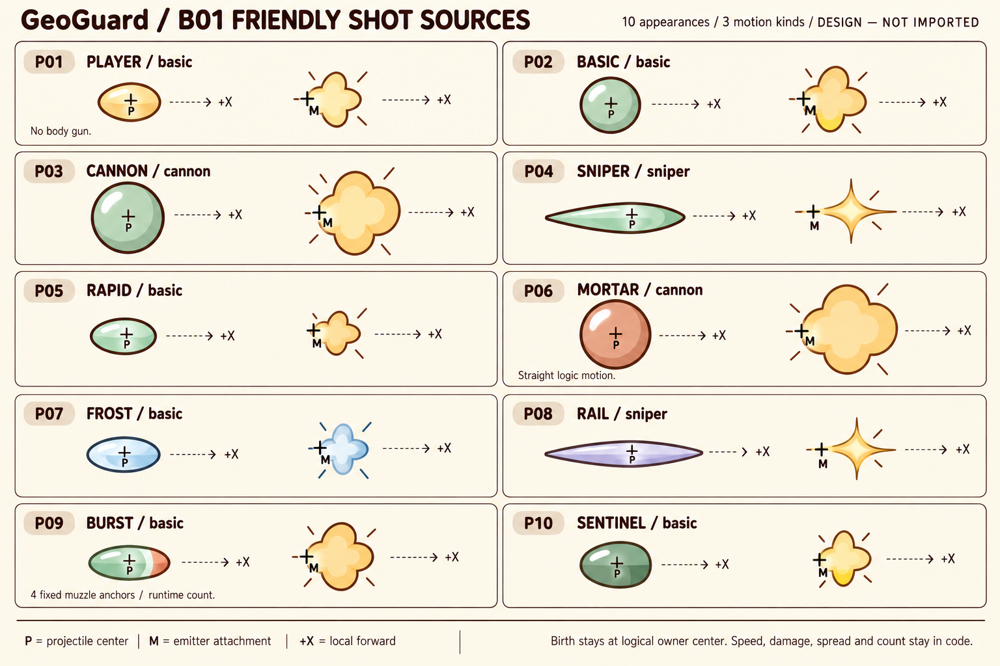
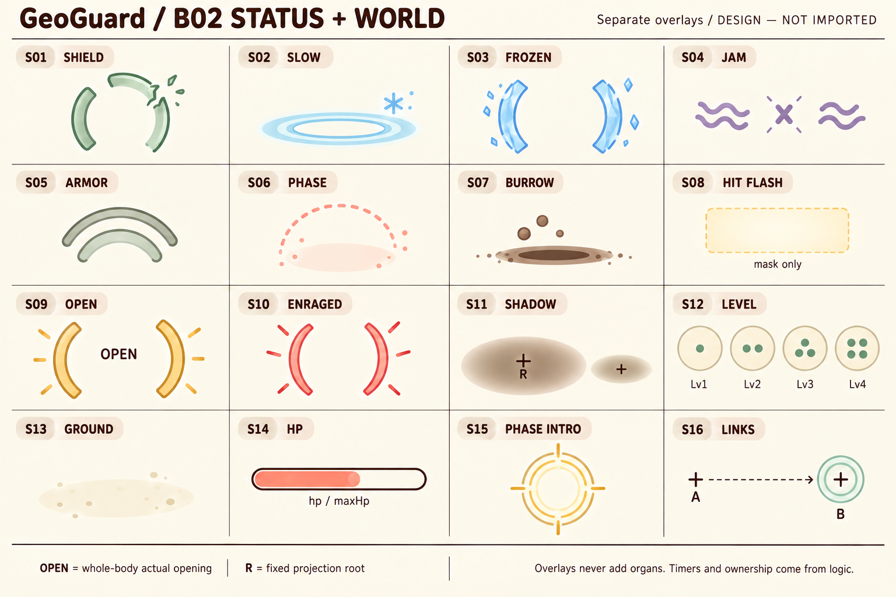
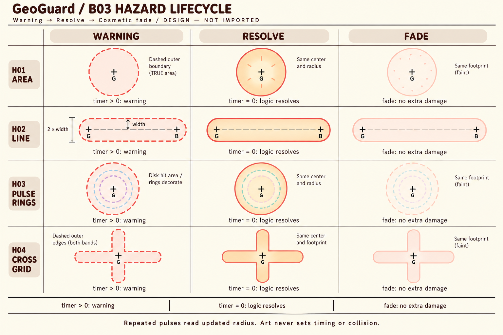
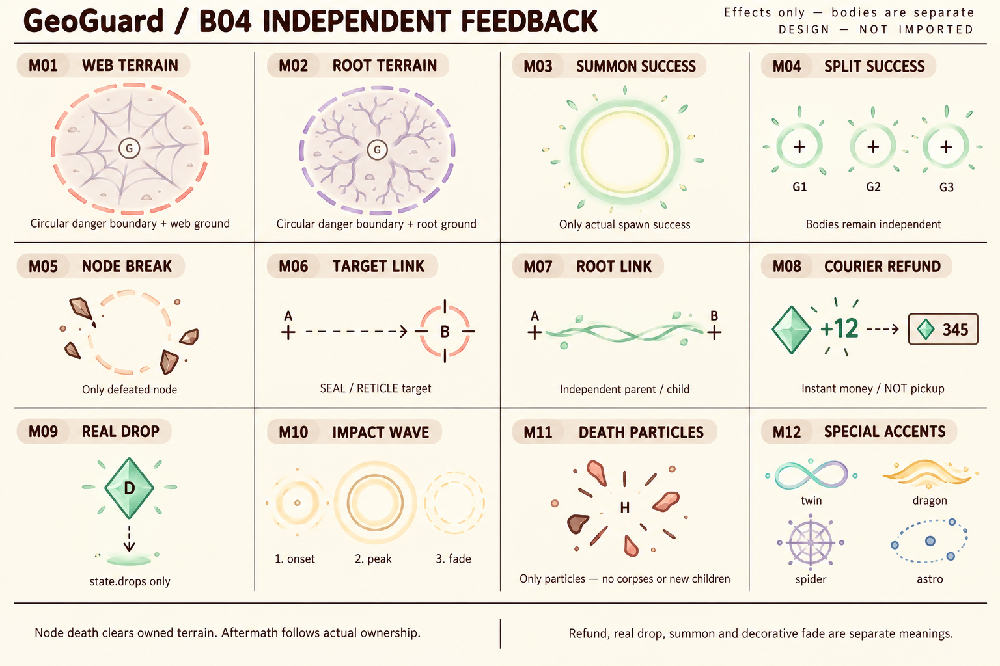
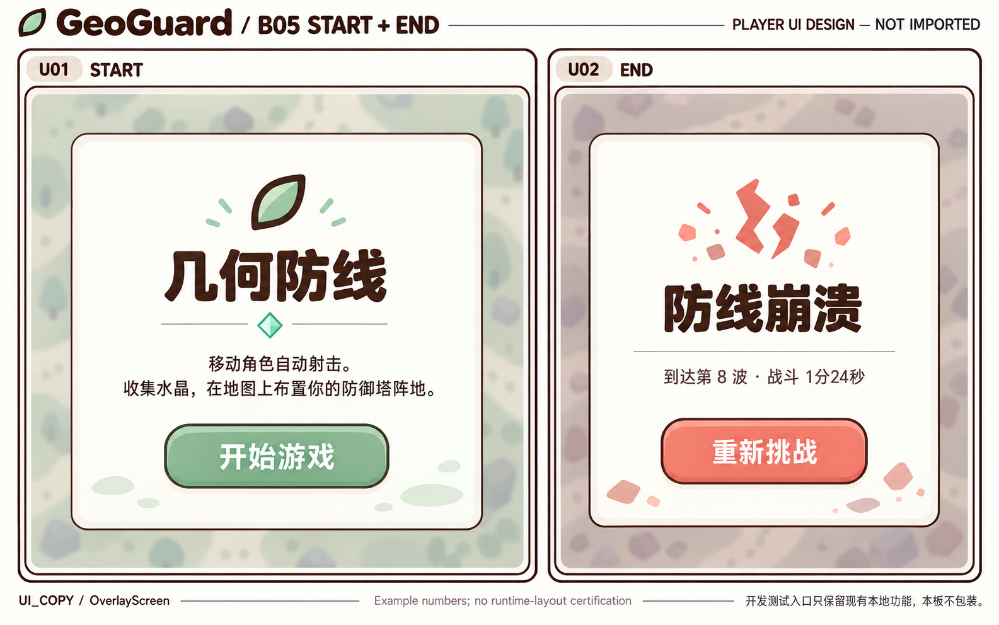
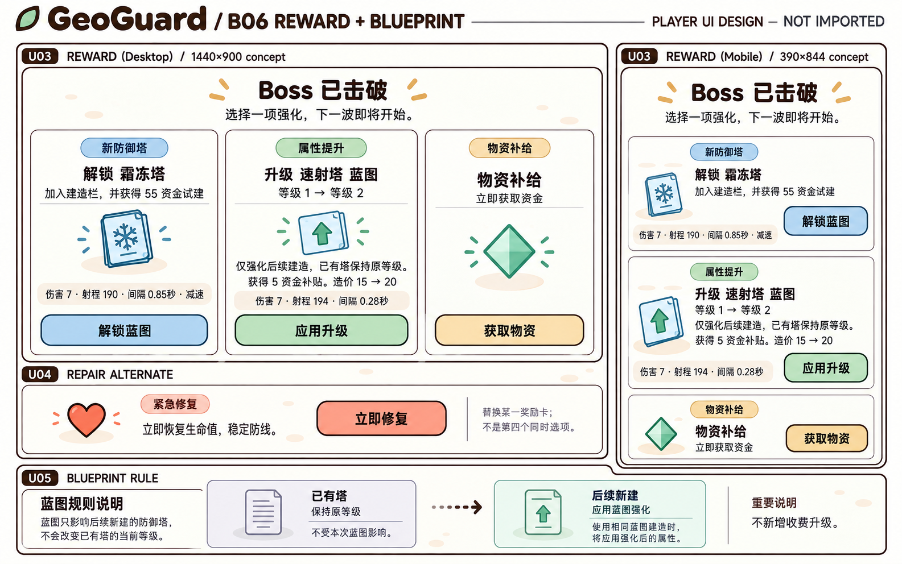
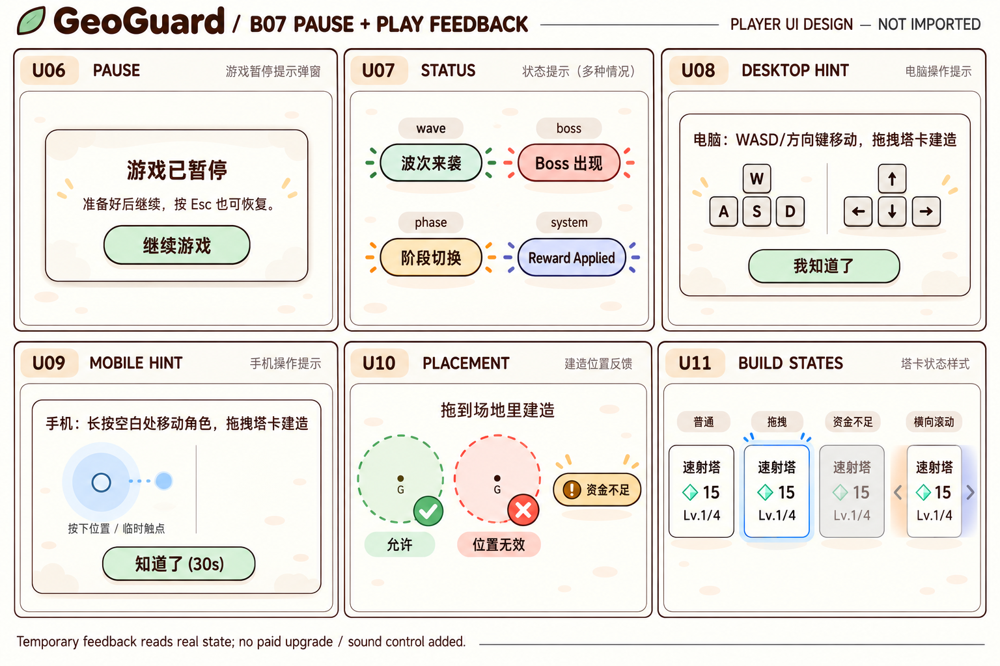
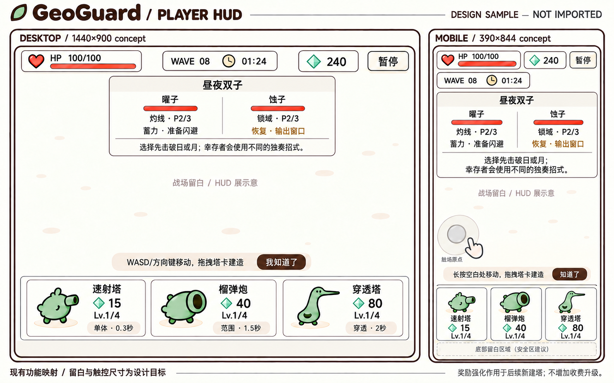
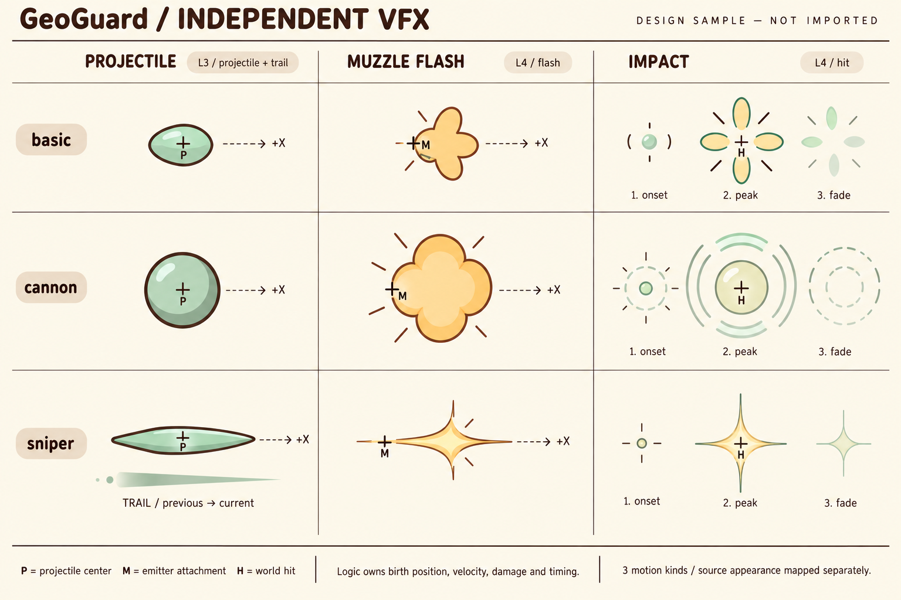

GeoGuard · Effects/UI r02
7张新原画 · 95技能 · 375外部效果归属 · 整包 submitted
奶油留白、暖棕轮廓、哑光贴纸语言。效果与身体分层，使用真实逻辑事件。新图是设计来源，尚未做透明资产、连续帧或游戏接入；UI数值与屏幕尺寸均为示例。
当前依赖：friendly r03、enemies r02、bosses-mechanics r03 已书面通过。LEFT须整体rig含P/M绕固定root镜像，再残余瞄准；UP使用各身份已过构造/遮挡。数字挂点仍是proposed。B05浅绿白字由字色规格覆盖为深棕。
B01 · 10来源弹体与独立flash
r02 整包待审
B01/P01 · PLAYER / basicB01/P02 · BASIC / basicB01/P03 · CANNON / cannonB01/P04 · SNIPER / sniperB01/P05 · RAPID / basicB01/P06 · MORTAR / cannonB01/P07 · FROST / basicB01/P08 · RAIL / sniperB01/P09 · BURST / basicB01/P10 · SENTINEL / basic
B02 · 16状态与战场层
r02 整包待审
B02/S01 · SHIELDB02/S02 · SLOWB02/S03 · FROZENB02/S04 · JAMB02/S05 · ARMORB02/S06 · PHASEB02/S07 · BURROWB02/S08 · HIT FLASHB02/S09 · OPENB02/S10 · ENRAGEDB02/S11 · SHADOWB02/S12 · LEVELB02/S13 · GROUNDB02/S14 · HPB02/S15 · PHASE INTROB02/S16 · LINKS
B03 · 实际圆区与线段生命周期
r02 整包待审
B03/H01 · AREAB03/H02 · LINEB03/H03 · PULSE RINGSB03/H04 · CROSS GRID
B04 · 独立地形、召唤、破碎、退款
r02 整包待审
B04/M01 · WEB TERRAINB04/M02 · ROOT TERRAINB04/M03 · SUMMON SUCCESSB04/M04 · SPLIT SUCCESSB04/M05 · NODE BREAKB04/M06 · TARGET LINKB04/M07 · ROOT LINKB04/M08 · COURIER REFUNDB04/M09 · REAL DROPB04/M10 · IMPACT WAVEB04/M11 · DEATH PARTICLESB04/M12 · SPECIAL ACCENTS
B05 · 开始与结束
r02 整包待审
B05/U01 · STARTB05/U02 · END
B06 · 奖励与未来新建蓝图
r02 整包待审
B06/U03 · REWARDB06/U04 · REPAIR ALTERNATEB06/U05 · BLUEPRINT RULE
B07 · 暂停、操作与放置反馈
r02 整包待审
B07/U06 · PAUSEB07/U07 · STATUSB07/U08 · DESKTOP HINTB07/U09 · MOBILE HINTB07/U10 · PLACEMENTB07/U11 · BUILD STATES
R01_HUD · 已过桌面／移动HUD
r01 已通过保留
R01/HUD · accepted desktop/mobile HUD
R01_HIT · 已过三个kind的命中行
r01 已通过保留
R01/HIT_BASIC · basic row impact onset/peak/fadeR01/HIT_CANNON · cannon row impact onset/peak/fadeR01/HIT_SNIPER · sniper row impact/trail
95项真实技能 → 具体格／几何／生命周期
93默认＋2幸存技能。H03环装饰覆盖真实disk；H04只复用逐条真实线段构图，实际可以平行或斜交。没有hazard的技能不增加hazard。warning读timer，resolve瞬间结算，fade纯装饰。展开每行查看handler与后续机关触发依据。
375条身体动作 → 外部效果层
106我方＋77敌方＋192 Boss/机关。身体最终来源仍由上游负责，此表没有重新批准身体；格的触发条件以完整JSON和cell-catalog为准。